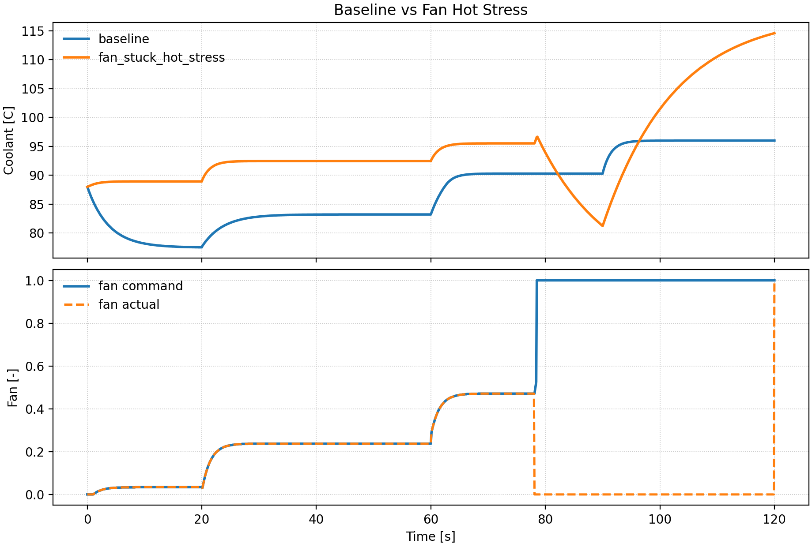
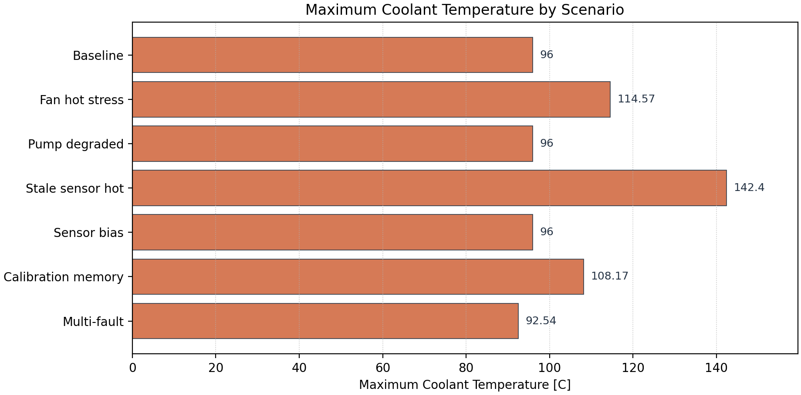
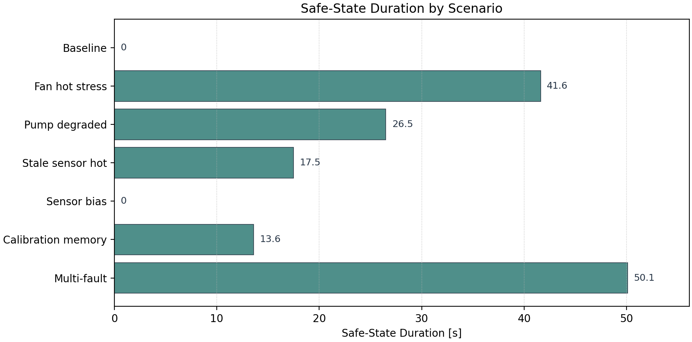
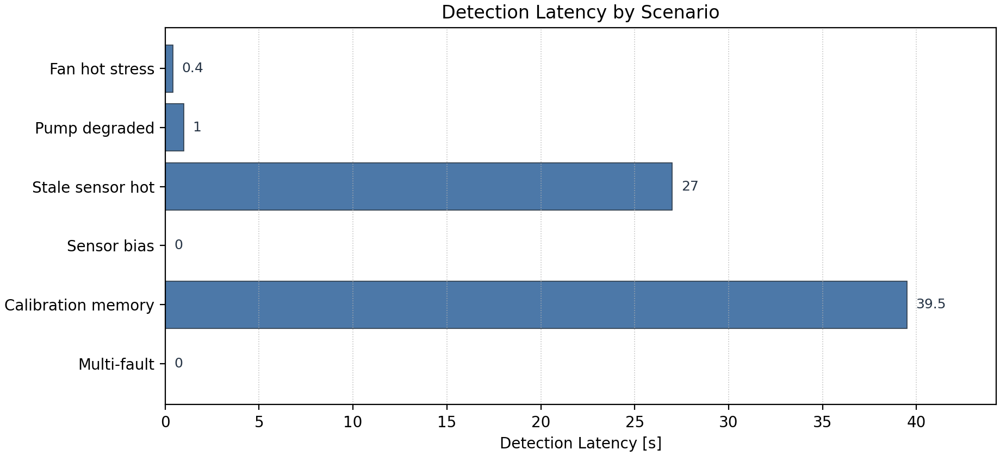

Virtual ECU Paper Study v1
Cross-Layer Fault Propagation Evidence Package
This compact report summarizes a reproducible virtual ECU study package for research discussion. The evidence path is fault origin → ECU-visible disturbance → diagnostic evidence / DTC → safe-state response → thermal outcome. The intent is to support paper framing and research discussion without relying on the GUI.
Fault Taxonomy
| Fault class | Fault type | Fault origin | ECU-visible disturbance | Diagnostic evidence | Safe-state response | Thermal outcome |
|---|---|---|---|---|---|---|
| baseline | none | no injected hardware-origin fault | nominal sensor and actuator signals | none observed in selected representative run(s) | normal only in selected representative run(s) | max coolant 96.00 C |
| sensing-path fault | sensor_bias | ADC/reference/front-end offset | biased coolant temperature measurement | coolant_sensor_rationality | normal only in selected representative run(s) | max coolant 96.00 C |
| timing/communication-path fault | stale_sensor_data | delayed sampled-data coolant transfer | older coolant sample reused by control and diagnostics | coolant_sensor_rationality cooling_performance_low |
precautionary_cooling limp_home |
max coolant 142.40 C |
| actuation-path fault | pump_degraded | weak driver, aging pump, or supply droop | reduced pump authority relative to command | pump_tracking_fault | precautionary_cooling limp_home |
max coolant 96.00 C |
| actuation-path fault | fan_stuck_off | gate-driver, PWM-output, or power-stage stuck-off fault | commanded fan does not produce expected airflow | fan_tracking_fault | precautionary_cooling limp_home |
max coolant 114.57 C |
| computation/memory-path fault | calibration_memory_corruption | corrupted coolant-control calibration memory | altered control threshold or target behavior | cooling_performance_low | precautionary_cooling limp_home |
max coolant 108.17 C |
Representative Comparison: Baseline vs Fan Hot Stress
| Scenario | Fault type | Max coolant [C] | Final coolant [C] | First DTC | Final primary DTC | Final safe state | Detection [s] | Safe-state duration [s] |
|---|---|---|---|---|---|---|---|---|
| baseline | none | 96.00 | 96.00 | none | none | normal | n/a | 0.000 |
| fan_stuck_hot_stress | fan_stuck_off | 114.57 | 114.57 | fan_tracking_fault | fan_tracking_fault | limp_home | 0.400 | 41.600 |
In this deterministic representative run, `fan_stuck_hot_stress` reaches a peak coolant temperature 18.57 C above the baseline and records `fan_tracking_fault` as DTC evidence. The final safe state is `limp_home`, compared with `normal` for the baseline.

Aggregate Results
| Scenario | Fault type | First DTC | Final safe state | Detection [s] | Safe-state [s] | Max coolant [C] |
|---|---|---|---|---|---|---|
| baseline | none | none | normal | n/a | 0.000 | 96.00 |
| fan_stuck_hot_stress | fan_stuck_off | fan_tracking_fault | limp_home | 0.400 | 41.600 | 114.57 |
| pump_degraded_only | pump_degraded | pump_tracking_fault | normal | 1.000 | 26.500 | 96.00 |
| stale_sensor_data_hot_stress | stale_sensor_data | coolant_sensor_rationality | normal | 27.000 | 17.500 | 142.40 |
| sensor_bias_only | sensor_bias | coolant_sensor_rationality | normal | 0.000 | 0.000 | 96.00 |
| calibration_memory_corruption | calibration_memory_corruption | cooling_performance_low | limp_home | 39.500 | 13.600 | 108.17 |
| paper_default_multi_fault | sensor_bias+pump_degraded+fan_stuck_off | coolant_sensor_rationality | limp_home | 0.000 | 50.100 | 92.54 |
Aggregate Figures



Cautious Claim Candidates
- The tool produces reproducible, CSV-backed traces for 7 representative virtual ECU scenarios without requiring GUI interaction.
- The raw CSV schema links configured fault events to ECU-visible labels, diagnostics, safe-state labels, actuator/sensor residuals, and thermal state in the same trace.
- In this representative set, 6 of 6 non-baseline scenarios show at least one non-none diagnostic/DTC evidence label during the run.
- In this representative set, 5 of 6 non-baseline scenarios enter or finish in a non-normal safe-state response.
- The fan hot-stress representative run demonstrates a clear actuation-path propagation case: `fan_stuck_off` leads to `fan_tracking_fault`, `limp_home`, and a peak coolant temperature 18.57 C above baseline.
- The included multi-event scenario demonstrates that the framework can represent staged fault narratives across more than one hardware-origin path.
Limitations / Non-Claims
This package is not circuit-level validation, not production ECU certification, not real-vehicle calibration validation, and not statistical reliability estimation. It is a compact reproducible evidence package for a research prototype.
Reproduction Command
make
python3 scripts/generate_paper_study_v1.py